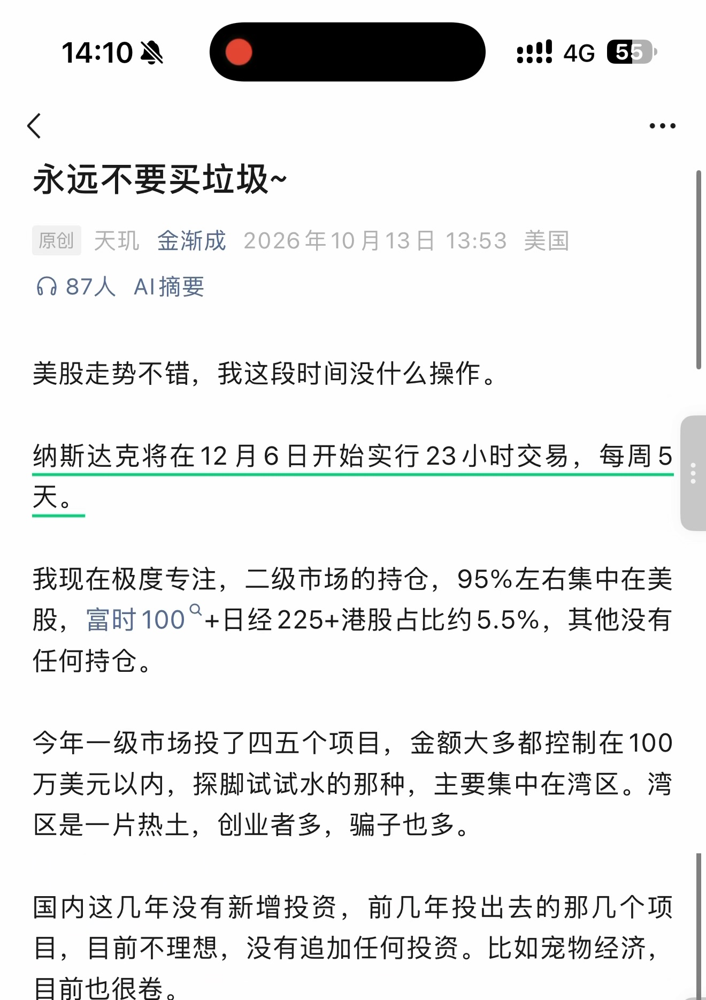
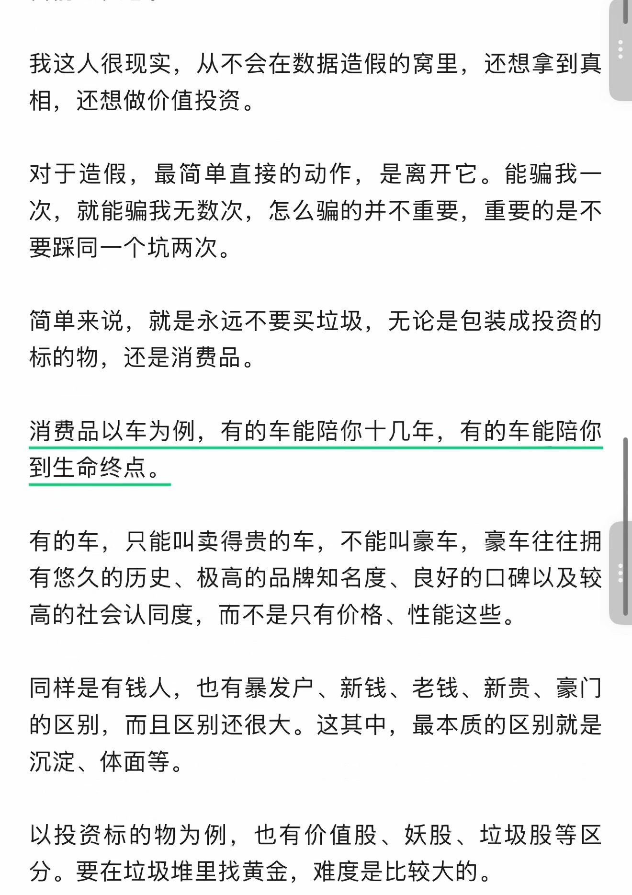
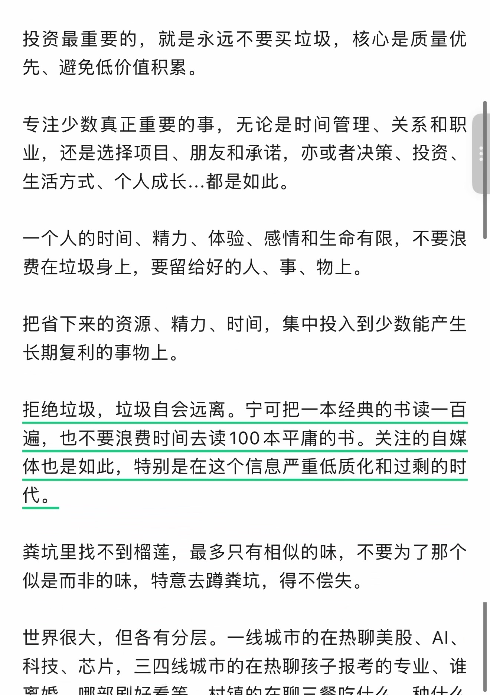
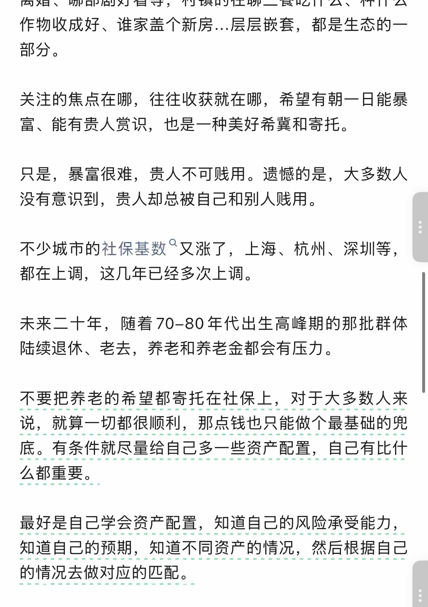
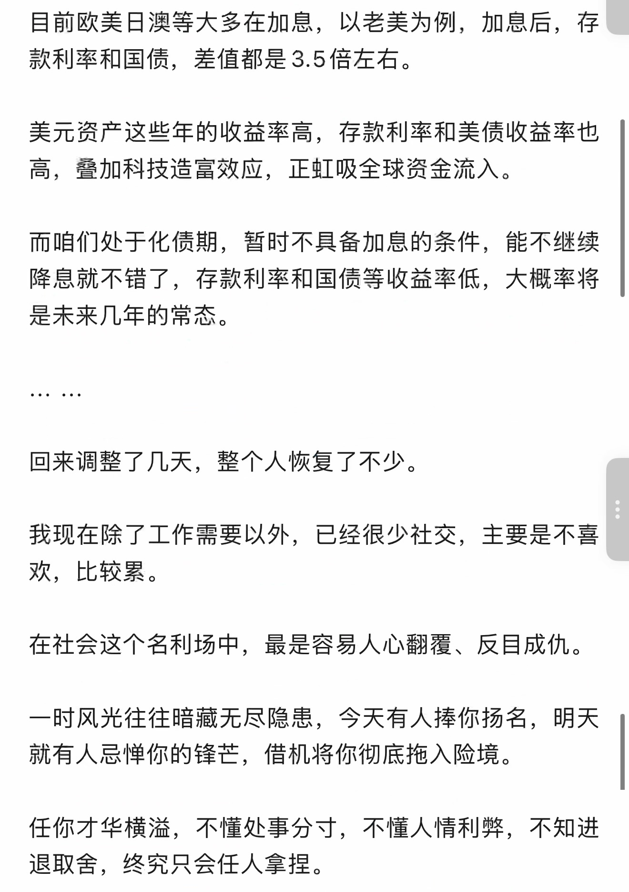
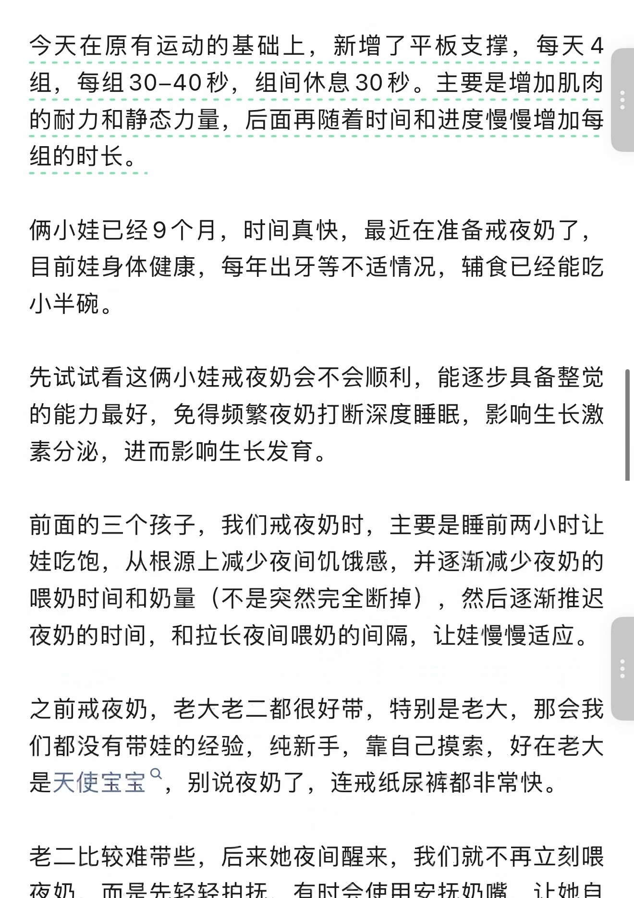
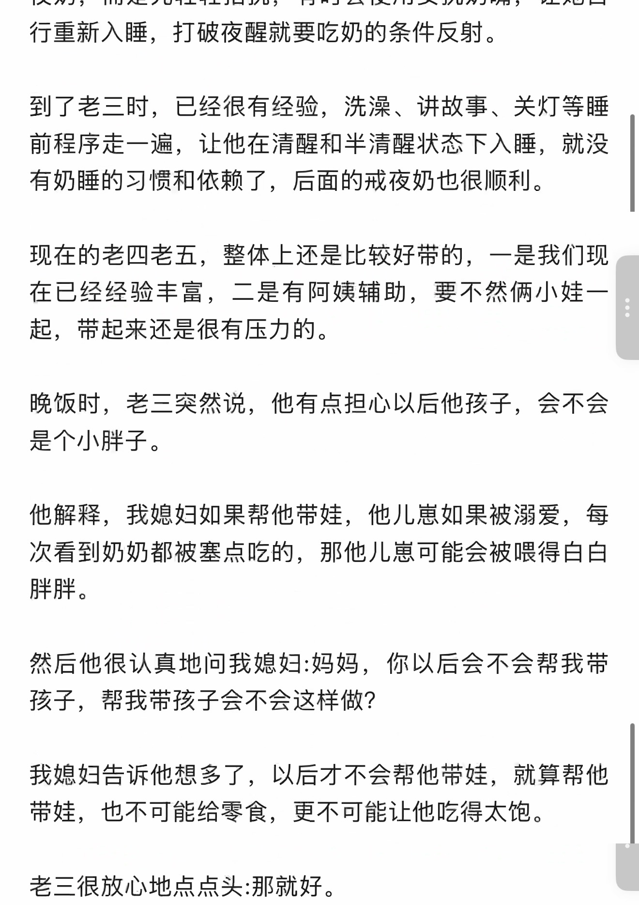
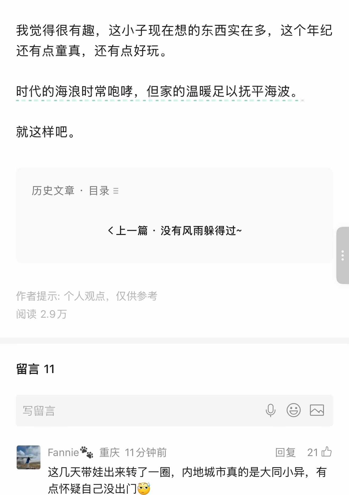
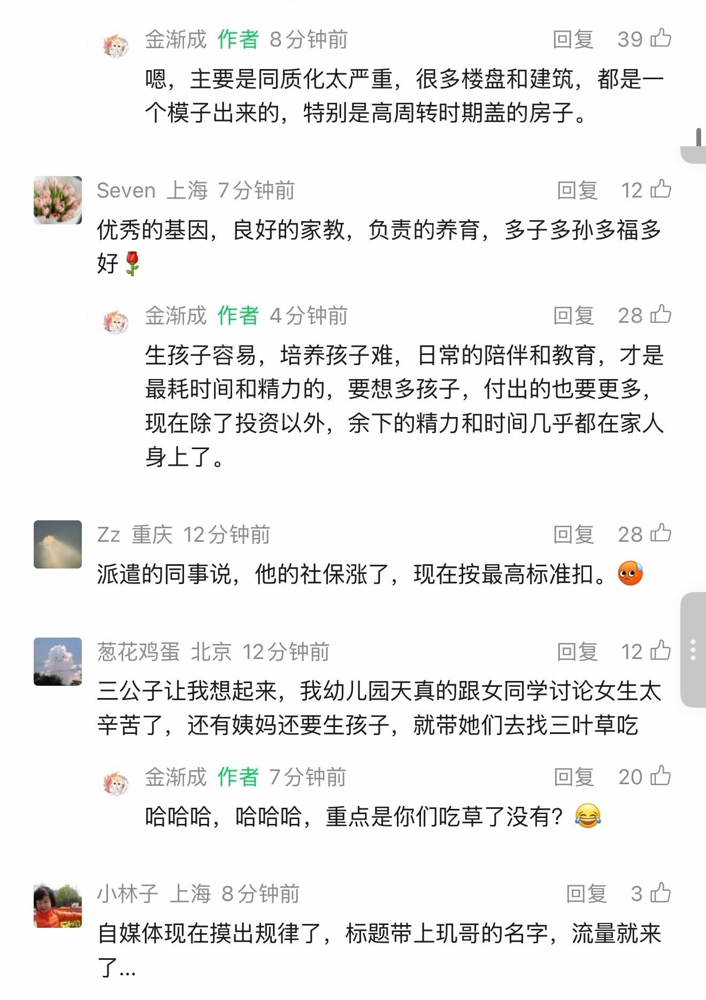
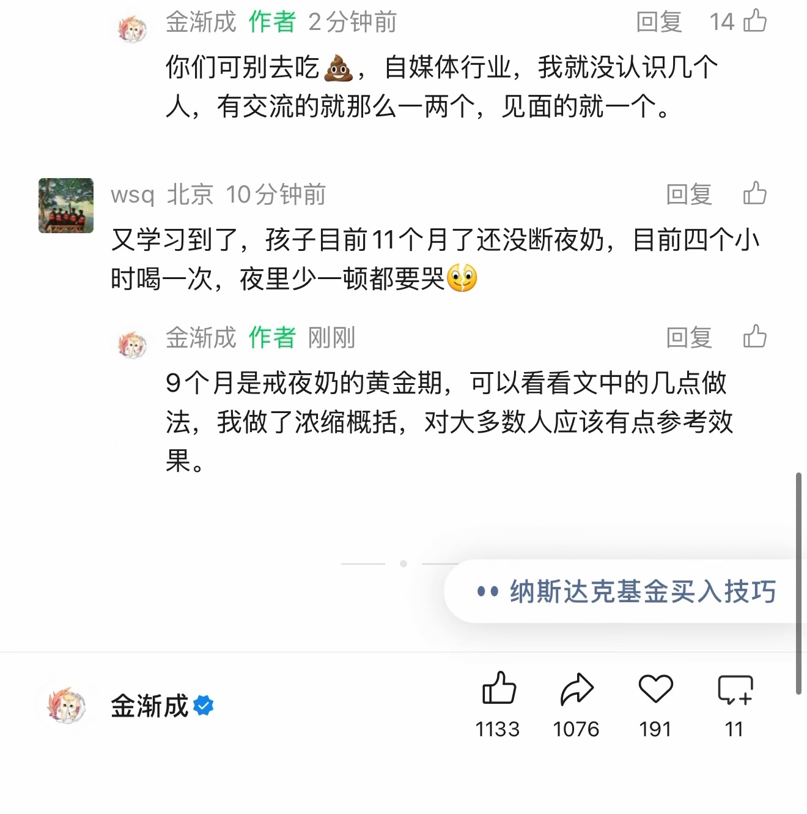

永远不要买垃圾~
原始截图优先 · OCR 仅辅助检索
原始 PDF 不公开，本页展示捕获页面的截图。 下方优先展示原始截图；自动识别文字默认收起，仅辅助检索与对照。OCR 由程序自动识别，尚未逐字核对，可能存在错字、漏字、漏行、顺序或断行错误。留言与作者回复仅限截图中可见的内容，不代表完整线上留言，也未据此推断留言总数。
OCR 识别提示（待核对）
- OCR/视觉转录文字，尚未逐字校对；可能错字、漏字、漏行，数字、姓名、表情、标点及断行也可能有误，请以截图为准。
- 这里只保留 PDF 已截到的正文、留言和作者回复；截图以外的留言不在此存档中。
- 未从截图推断留言总数或回复关系；手机界面文字也可能混入 OCR。
- 本次从已发布 v6 页面恢复已有逐页转录文本，没有重新进行 OCR，不提供机器置信分数；这些 TXT 是页面文字的恢复副本，并非原始 OCR 引擎输出。
- 页面边界和重复行处理沿用已有发布文本；未补写画面以外的内容。
- 方括号中的表情说明是已有转录注释，原始表情请对照截图。
识别工具：Recovered existing published visual transcription (Sites v6) · 。识别器置信度仅用于提示核对，不是文字准确率。
第 1 页 · 原始截图

查看本页自动识别文字（OCR待核对）
以下为未经逐字核对的自动识别结果，请以上方原图为准。
永远不要买垃圾~
原创 天玑 金渐成 2026年10月13日 13:53 美国
美股走势不错，我这段时间没什么操作。
纳斯达克将在12月6日开始实行23小时交易，每周5天。
我现在极度专注，二级市场的持仓，95%左右集中在美股，富时100+日经225+港股占比约5.5%，其他没有任何持仓。
今年一级市场投了四五个项目，金额大多都控制在100万美元以内，探脚试试水的那种，主要集中在湾区。湾区是一片热土，创业者多，骗子也多。
国内这几年没有新增投资，前几年投出去的那几个项目，目前不理想，没有追加任何投资。比如宠物经济，目前也很卷。
第 2 页 · 原始截图

查看本页自动识别文字（OCR待核对）
以下为未经逐字核对的自动识别结果，请以上方原图为准。
我这人很现实，从不会在数据造假的窝里，还想拿到真相，还想做价值投资。
对于造假，最简单直接的动作，是离开它。能骗我一次，就能骗我无数次，怎么骗的并不重要，重要的是不要踩同一个坑两次。
简单来说，就是永远不要买垃圾，无论是包装成投资的标的物,还是消费品。
消费品以车为例，有的车能陪你十几年，有的车能陪你到生命终点。
有的车，只能叫卖得贵的车，不能叫豪车，豪车往往拥有悠久的历史、极高的品牌知名度、良好的口碑以及较高的社会认同度，而不是只有价格、性能这些。
同样是有钱人，也有暴发户、新钱、老钱、新贵、豪门的区别，而且区别还很大。这其中，最本质的区别就是沉淀、体面等。
以投资标的物为例，也有价值股、妖股、垃圾股等区分。要在垃圾堆里找黄金，难度是比较大的。
第 3 页 · 原始截图

查看本页自动识别文字（OCR待核对）
以下为未经逐字核对的自动识别结果，请以上方原图为准。
投资最重要的，就是永远不要买垃圾，核心是质量优先、避免低价值积累。
专注少数真正重要的事，无论是时间管理、关系和职业，还是选择项目、朋友和承诺，亦或者决策、投资、生活方式、个人成长...都是如此。
一个人的时间、精力、体验、感情和生命有限，不要浪费在垃圾身上，要留给好的人、事、物上。
把省下来的资源、精力、时间，集中投入到少数能产生长期复利的事物上。
拒绝垃圾，垃圾自会远离。宁可把一本经典的书读一百遍，也不要浪费时间去读100本平庸的书。关注的自媒体也是如此，特别是在这个信息严重低质化和过剩的时代。
粪坑里找不到榴莲，最多只有相似的味，不要为了那个似是而非的味，特意去蹲粪坑，得不偿失。
世界很大，但各有分层。一线城市的在热聊美股、AI、科技、芯片，三四线城市的在热聊孩子报考的专业、谁
第 4 页 · 原始截图

查看本页自动识别文字（OCR待核对）
以下为未经逐字核对的自动识别结果，请以上方原图为准。
离婚、哪部剧好看等，村镇的在聊三餐吃什么、种什么作物收成好、谁家盖个新房...层层嵌套，都是生态的一部分。
关注的焦点在哪，往往收获就在哪，希望有朝一日能暴富、能有贵人赏识，也是一种美好希冀和寄托。
只是，暴富很难，贵人不可贱用。遗憾的是，大多数人没有意识到，贵人却总被自己和别人贱用。
不少城市的社保基数又涨了，上海、杭州、深圳等，都在上调，这几年已经多次上调。
未来二十年，随着70-80年代出生高峰期的那批群体陆续退休、老去，养老和养老金都会有压力。
不要把养老的希望都寄托在社保上，对于大多数人来说，就算一切都很顺利，那点钱也只能做个最基础的兜底。有条件就尽量给自己多一些资产配置，自己有比什么都重要。
最好是自己学会资产配置，知道自己的风险承受能力，知道自己的预期，知道不同资产的情况，然后根据自己的情况去做对应的匹配。
第 5 页 · 原始截图

查看本页自动识别文字（OCR待核对）
以下为未经逐字核对的自动识别结果，请以上方原图为准。
目前欧美日澳等大多在加息，以老美为例，加息后，存款利率和国债，差值都是3.5倍左右。
美元资产这些年的收益率高，存款利率和美债收益率也高，叠加科技造富效应，正虹吸全球资金流入。
而咱们处于化债期，暂时不具备加息的条件，能不继续降息就不错了，存款利率和国债等收益率低，大概率将是未来几年的常态。
… …
回来调整了几天，整个人恢复了不少。
我现在除了工作需要以外，已经很少社交，主要是不喜欢，比较累。
在社会这个名利场中，最是容易人心翻覆、反目成仇。
一时风光往往暗藏无尽隐患，今天有人捧你扬名，明天就有人忌惮你的锋芒，借机将你彻底拖入险境。
任你才华横溢，不懂处事分寸，不懂人情利弊，不知进退取舍，终究只会任人拿捏。
第 6 页 · 原始截图

查看本页自动识别文字（OCR待核对）
以下为未经逐字核对的自动识别结果，请以上方原图为准。
今天在原有运动的基础上，新增了平板支撑，每天4组，每组30-40秒，组间休息30秒。主要是增加肌肉的耐力和静态力量，后面再随着时间和进度慢慢增加每组的时长。
俩小娃已经9个月，时间真快，最近在准备戒夜奶了，目前娃身体健康，每年出牙等不适情况，辅食已经能吃小半碗。
先试试看这俩小娃戒夜奶会不会顺利，能逐步具备整觉的能力最好，免得频繁夜奶打断深度睡眠，影响生长激素分泌，进而影响生长发育。
前面的三个孩子，我们戒夜奶时，主要是睡前两小时让娃吃饱，从根源上减少夜间饥饿感，并逐渐减少夜奶的喂奶时间和奶量（不是突然完全断掉），然后逐渐推迟夜奶的时间，和拉长夜间喂奶的间隔，让娃慢慢适应。
之前戒夜奶，老大老二都很好带，特别是老大，那会我们都没有带娃的经验，纯新手，靠自己摸索，好在老大是天使宝宝，别说夜奶了，连戒纸尿裤都非常快。
老二比较难带些，后来她夜间醒来，我们就不再立刻喂
第 7 页 · 原始截图

查看本页自动识别文字（OCR待核对）
以下为未经逐字核对的自动识别结果，请以上方原图为准。
夜奶，而是先轻轻拍抚，有时会使用安抚奶嘴，让她自行重新入睡，打破夜醒就要吃奶的条件反射。
到了老三时，已经很有经验，洗澡、讲故事、关灯等睡前程序走一遍，让他在清醒和半清醒状态下入睡，就没有奶睡的习惯和依赖了，后面的戒夜奶也很顺利。
现在的老四老五，整体上还是比较好带的，一是我们现在已经经验丰富，二是有阿姨辅助，要不然俩小娃一起，带起来还是很有压力的。
晚饭时，老三突然说，他有点担心以后他孩子，会不会是个小胖子。
他解释，我媳妇如果帮他带娃，他儿崽如果被溺爱，每次看到奶奶都被塞点吃的，那他儿崽可能会被喂得白白胖胖。
然后他很认真地问我媳妇:妈妈，你以后会不会帮我带孩子，帮我带孩子会不会这样做?
我媳妇告诉他想多了，以后才不会帮他带娃，就算帮他带娃，也不可能给零食，更不可能让他吃得太饱。
老三很放心地点点头:那就好。
第 8 页 · 原始截图

查看本页自动识别文字（OCR待核对）
以下为未经逐字核对的自动识别结果，请以上方原图为准。
我觉得很有趣，这小子现在想的东西实在多，这个年纪还有点童真，还有点好玩。
时代的海浪时常咆哮，但家的温暖足以抚平海波。
就这样吧。
历史文章 · 目录
上一篇 · 没有风雨躲得过~
作者提示: 个人观点，仅供参考
阅读 2.9万
留言 11
Fannie🐾 重庆 11分钟前 回复 21赞
这几天带娃出来转了一圈，内地城市真的是大同小异，有点怀疑自己没出门[表情：翻白眼流汗]
第 9 页 · 原始截图

查看本页自动识别文字（OCR待核对）
以下为未经逐字核对的自动识别结果，请以上方原图为准。
金渐成 作者 8分钟前 回复 39赞
嗯，主要是同质化太严重，很多楼盘和建筑，都是一个模子出来的，特别是高周转时期盖的房子。
Seven 上海 7分钟前 回复 12赞
优秀的基因，良好的家教，负责的养育，多子多孙多福多好🌹
金渐成 作者 4分钟前 回复 28赞
生孩子容易，培养孩子难，日常的陪伴和教育，才是最耗时间和精力的，要想多孩子，付出的也要更多，现在除了投资以外，余下的精力和时间几乎都在家人身上了。
Zz 重庆 12分钟前 回复 28赞
派遣的同事说，他的社保涨了，现在按最高标准扣。[表情：流汗]
葱花鸡蛋 北京 12分钟前 回复 12赞
三公子让我想起来，我幼儿园天真的跟女同学讨论女生太辛苦了，还有姨妈还要生孩子，就带她们去找三叶草吃
金渐成 作者 7分钟前 回复 20赞
哈哈哈，哈哈哈，重点是你们吃草了没有？😂
小林子 上海 8分钟前 回复 3赞
自媒体现在摸出规律了，标题带上玑哥的名字，流量就来了...
第 10 页 · 原始截图

查看本页自动识别文字（OCR待核对）
以下为未经逐字核对的自动识别结果，请以上方原图为准。
金渐成 作者 2分钟前 回复 14赞
你们可别去吃💩，自媒体行业，我就没认识几个人，有交流的就那么一两个，见面的就一个。
wsq 北京 10分钟前 回复
又学习到了，孩子目前11个月了还没断夜奶，目前四个小时喝一次，夜里少一顿都要哭[表情：可怜]
金渐成 作者 刚刚 回复
9个月是戒夜奶的黄金期，可以看看文中的几点做法，我做了浓缩概括，对大多数人应该有点参考效果。
纳斯达克基金买入技巧
金渐成
赞 1133
转发 1076
喜欢 191
留言 11
按日期浏览全部来源（同日按条目标识排序）
回到页首 ↑